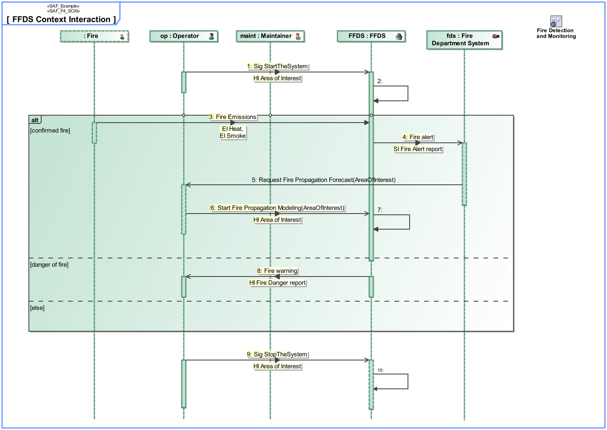

F4_SCXI System Context Interaction Viewpoint
| Domain | Aspect | Maturity |
|---|---|---|
| Functional | Interaction & Collaboration |

The System Context Interaction Viewpoint describes the System external behavior based on the exchange between Logical SOI and Logical Context Elements Usage in a given System Context. It depicts the sequence of interactions between the Logical SOI, the Context Elements and the exchanged Domain Item Kinds needed to accomplish a given System Process. Note: The System Context Interaction Viewpoint may refine a System Use Case.
The System Context Interaction Viewpoint supports the “prepare for requirement definition” activity part of the “System Requirements Definition Process” activities of the INCOSE SYSTEMS ENGINEERING HANDBOOK 2015 [§ 4.3] and contributes to the identification of expected interactions with systems external to the SOI.
A sequence diagram featuring the flow of control between SOI and Context Elements Roles of a System Context to achieve one outcome of a System Use Case. Note: This diagram depicts the sending and receiving of messages between the interacting entities called lifelines, where time is represented along the vertical axis. The lifelines representatives are part properties typed by a System Context Elements.
The following Stereotypes / Model Elements are used in the Viewpoint: